Germany · Tier VIII
All nations and tiers · EU v20410 → RU v14600ru · 3 November 2026
Ferdinand · Tier VIII
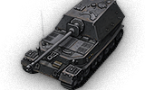
Mobility
Forward speed on medium terrain (km/h) EU 30  RU 29.79
RU 29.79
Forward speed on soft terrain (km/h) EU 17.70 RU 17.46
Engine power (hp) EU 900 RU 888.12
Power/weight (hp/t) EU 13.48 RU 13.31
Tank traverse (°/s) EU 34.42 RU 21.90
Tank traverse on hard terrain (°/s) EU 36.36 RU 28.76
Tank traverse on medium terrain (°/s) EU 23.53 RU 18.61
Tank traverse on soft terrain (°/s) EU 13.79 RU 10.91
Armor & health
Hull armor · front (mm) EU 220  RU 240
RU 240
Health EU 1 600 RU 1 500
Health · engine EU 275 RU 255
Track repair time (s) EU 11.70 RU 12.03
Miscellaneous
Fire chance (%) EU 20 RU 15
Ferdinand FL · Tier VIII

Mobility
Forward speed on medium terrain (km/h) EU 30 RU 29.79
Forward speed on soft terrain (km/h) EU 17.70 RU 17.46
Engine power (hp) EU 900 RU 888.12
Power/weight (hp/t) EU 13.48 RU 13.31
Tank traverse (°/s) EU 34.42 RU 21.90
Tank traverse on hard terrain (°/s) EU 32.70 RU 20.81
Tank traverse on medium terrain (°/s) EU 21.16 RU 13.46
Tank traverse on soft terrain (°/s) EU 12.40 RU 7.89
Armor & health
Hull armor · front (mm) EU 220 RU 240
Health EU 1 600 RU 1 500
Health · engine EU 275 RU 255
Track repair time (s) EU 11.70 RU 12.03
Miscellaneous
Fire chance (%) EU 20 RU 15
G.W. Tiger (P) · Tier VIII
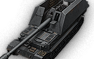
Penetration (mm)
EU  HE 53 /
HE 53 /  HE 66 /
HE 66 /  AP 296 → RU
AP 296 → RU  HE 53 /
HE 53 /  AP 296
AP 296
Damage (HP)
EU  HE 900 /
HE 900 /  HE 1200 /
HE 1200 /  AP 640 → RU
AP 640 → RU  HE 1250 /
HE 1250 /  AP 700
AP 700
Firepower
DPM (HP/min) EU 1 224.39 RU 1 700.54
Explosion radius EU 11.40 RU 9
Stun duration · maximum (s) EU 31 → RU —
Stun duration · minimum (s) EU 12.40 → RU —
Potential damage EU 13 500 RU 18 750
Mobility
Tank traverse on hard terrain (°/s) EU 17.10 RU 17.08
Tank traverse on medium terrain (°/s) EU 14.82 RU 14.80
Tank traverse on soft terrain (°/s) EU 8.89 RU 8.88
Armor & health
Health · ammo rack EU 210 RU 120
Miscellaneous
Shell cost EU 2 080 RU 2 390
HWK 12 · Tier VIII
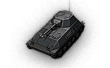
Penetration (mm)
EU  AP 198 /
AP 198 /  HEAT 250 /
HEAT 250 /  HE 45 → RU
HE 45 → RU  AP 180 /
AP 180 /  HEAT 250 /
HEAT 250 /  HE 45
HE 45
Damage (HP)
EU  AP 250 /
AP 250 /  HEAT 250 /
HEAT 250 /  HE 320 → RU
HE 320 → RU  AP 240 /
AP 240 /  HEAT 240 /
HEAT 240 /  HE 320
HE 320
Firepower
DPM (HP/min) EU 1 980.38 RU 1 910.34
Rate of fire (rounds/min) EU 7.92 RU 7.96
Reload time (s) EU 7.57 RU 7.54
Shell velocity (m/s) EU 1 150 RU 630
Potential damage EU 12 500 RU 12 000
Gun handling
Aim time (s) EU 1.73 RU 1.92
Dispersion (m/100 m) EU 0.34 RU 0.35
Dispersion · damaged EU 0.67 RU 0.69
Dispersion · turret traverse EU 0.10 RU 0.12
Mobility
Forward speed (km/h) EU 68 RU 65
Forward speed on hard terrain (km/h) EU 68 RU 65
Forward speed on medium terrain (km/h) EU 68 RU 65
Forward speed on soft terrain (km/h) EU 68 RU 57.71
Engine power (hp) EU 430 RU 450
Power/weight (hp/t) EU 34.41 RU 36.01
Terrain resist (hard) EU 0.86 RU 1.08
Terrain resist (med) EU 0.96 RU 1.20
Terrain resist (soft) EU 1.82 RU 2.28
Tank traverse (°/s) EU 49.02 RU 45.89
Tank traverse on hard terrain (°/s) EU 51.50 RU 57.47
Tank traverse on medium terrain (°/s) EU 46.35 RU 51.73
Tank traverse on soft terrain (°/s) EU 24.39 RU 27.22
Armor & health
Track armor EU 5 RU 10
Health EU 1 350 RU 1 100
Miscellaneous
View range (m) EU 400 RU 410
Indien-Panzer · Tier VIII
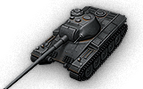
Penetration (mm)
EU  AP 218 /
AP 218 /  APCR 259 /
APCR 259 /  HE 90 → RU
HE 90 → RU  AP 234 /
AP 234 /  APCR 268 /
APCR 268 /  HE 90
HE 90
Damage (HP)
EU  AP 300 /
AP 300 /  APCR 300 /
APCR 300 /  HE 360 → RU
HE 360 → RU  AP 280 /
AP 280 /  APCR 280 /
APCR 280 /  HE 370
HE 370
Firepower
DPM (HP/min) EU 2 109.44 RU 2 433.67
Rate of fire (rounds/min) EU 7.03 RU 8.69
Reload time (s) EU 8.53 RU 6.90
Potential damage EU 18 300 RU 17 080
Gun handling
Aim time (s) EU 1.82 RU 1.92
Mobility
Forward speed (km/h) EU 55 RU 60
Forward speed on hard terrain (km/h) EU 55 RU 60
Forward speed on medium terrain (km/h) EU 53.80 RU 60
Forward speed on soft terrain (km/h) EU 28.07 RU 33.09
Engine power (hp) EU 670 RU 790
Power/weight (hp/t) EU 16.96 RU 20
Tank traverse (°/s) EU 54.24 RU 39.63
Tank traverse on hard terrain (°/s) EU 58.86 RU 40.03
Tank traverse on medium terrain (°/s) EU 53.96 RU 36.70
Tank traverse on soft terrain (°/s) EU 28.15 RU 19.15
Armor & health
Health EU 1 450 RU 1 400
Miscellaneous
View range (m) EU 380 RU 390
Jagdpanther II · Tier VIII
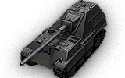
Armor & health
Hull armor · front (mm) EU 100 RU 120
Health EU 1 150 RU 1 350
Kanonenjagdpanzer · Tier VIII
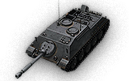
Penetration (mm)
EU  AP 238 /
AP 238 /  HEAT 250 /
HEAT 250 /  HE 102 → RU
HE 102 → RU  APCR 242 /
APCR 242 /  HEAT 290 /
HEAT 290 /  HE 102
HE 102
Damage (HP)
EU  AP 240 /
AP 240 /  HEAT 240 /
HEAT 240 /  HE 320 → RU
HE 320 → RU  APCR 240 /
APCR 240 /  HEAT 240 /
HEAT 240 /  HE 320
HE 320
Firepower
DPM (HP/min) EU 2 384 RU 1 866.12
Rate of fire (rounds/min) EU 9.93 RU 7.78
Reload time (s) EU 6.04 RU 26.37
Shell velocity (m/s) EU 1 030 RU 1 330
Normalization EU 5 RU 2
Ammo capacity EU 51 RU 56
Potential damage EU 12 240 RU 13 440
Clip size EU — → RU 4
Clip damage · damage EU — → RU 960
Clip damage · time (s) EU — → RU 4.50
Intra-clip reload EU — → RU 1.50
Gun handling
Aim time (s) EU 1.73 RU 1.44
Dispersion · moving EU 0.24 RU 0.28
Dispersion · tank traverse EU 0.24 RU 0.28
Dispersion · firing EU 4 RU 3.40
Armor & health
Health EU 1 200 RU 1 050
Leichter Kpz. 70 (K) · EU VIII → RU X
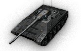
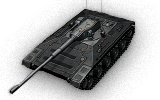
Penetration (mm)
EU  APCR 190 /
APCR 190 /  HEAT 260 /
HEAT 260 /  HE 105 → RU
HE 105 → RU  APCR 248 /
APCR 248 /  HEAT 280 /
HEAT 280 /  HE 105
HE 105
Damage (HP)
EU  APCR 240 /
APCR 240 /  HEAT 240 /
HEAT 240 /  HE 320 → RU
HE 320 → RU  APCR 360 /
APCR 360 /  HEAT 360 /
HEAT 360 /  HE 460
HE 460
General
Tier EU 8 → RU 10
Firepower
DPM (HP/min) EU 1 766.96 RU 1 765.15
Module damage EU 122 RU 150
Rate of fire (rounds/min) EU 7.36 RU 4.90
Reload time (s) EU 8.15 RU 12.24
Caliber EU 90 RU 105
Shell velocity (m/s) EU 1 000 RU 1 150
Normalization EU 5 RU 2
Ammo capacity EU 50 RU 42
Potential damage EU 12 000 RU 15 120
Clip size EU — → RU 3
Clip damage · damage EU — → RU 1 080
Clip damage · time (s) EU — → RU 12
Intra-clip reload EU — → RU 6
Gun handling
Aim time (s) EU 2.01 RU 2.40
Dispersion (m/100 m) EU 0.32 RU 0.29
Dispersion · damaged EU 0.63 RU 0.58
Dispersion · moving EU 0.12 RU 0.18
Dispersion · tank traverse EU 0.12 RU 0.18
Dispersion · turret traverse EU 0.10 RU 0.08
Dispersion · firing EU 3.50 RU 4
Mobility
Forward speed (km/h) EU 60 RU 70
Forward speed on hard terrain (km/h) EU 60 RU 70
Forward speed on medium terrain (km/h) EU 60 RU 70
Forward speed on soft terrain (km/h) EU 60 RU 70
Reverse speed (km/h) EU 20 RU 25
Engine power (hp) EU 700 RU 950
Weight (kg) EU 25 000 → RU 23 995
Power/weight (hp/t) EU 28 RU 39.59
Auto siege on/off · engage (km/h) EU 10 → RU 30
Auto siege on/off · disengage (km/h) EU 26 → RU 30
Armor & health
Hull armor · front (mm) EU 30 RU 50
Hull armor · side (mm) EU 15 RU 35
Hull armor · rear (mm) EU 15 RU 40
Turret armor · front (mm) EU 40 RU 50
Turret armor · side (mm) EU 25 RU 50
Turret armor · rear (mm) EU 20 RU 25
Health EU 1 150 RU 1 500
Health · track EU 220 RU 250
Health · ammo rack EU 200 RU 260
Track repair time (s) EU 10.03 RU 8.02
Miscellaneous
Stationary camo EU 16.64 RU 16.42
Stationary camo · after firing EU 3.96 RU 3.25
Moving camo EU 16.64 RU 16.42
Moving camo · after firing EU 3.96 RU 3.25
View range (m) EU 380 RU 390
Fire chance (%) EU 12 RU 10
Shell cost EU 390 RU 980
Alternate mode
EU stats · RU statsGeneral
Tier EU 8 → RU 10
Firepower
DPM (HP/min) EU 1 766.96 RU 1 765.15
Module damage EU 122 RU 150
Rate of fire (rounds/min) EU 7.36 RU 4.90
Reload time (s) EU 8.15 RU 12.24
Caliber EU 90 RU 105
Shell velocity (m/s) EU 1 000 RU 1 150
Normalization EU 5 RU 2
Ammo capacity EU 50 RU 42
Potential damage EU 12 000 RU 15 120
Clip size EU — → RU 3
Clip damage · damage EU — → RU 1 080
Clip damage · time (s) EU — → RU 12
Intra-clip reload EU — → RU 6
Gun handling
Aim time (s) EU 2.01 RU 2.40
Dispersion (m/100 m) EU 0.32 RU 0.29
Dispersion · damaged EU 0.63 RU 0.58
Dispersion · moving EU 0.12 RU 0.10
Dispersion · tank traverse EU 0.12 RU 0.10
Dispersion · turret traverse EU 0.10 RU 0.08
Dispersion · firing EU 3.50 RU 4
Mobility
Forward speed (km/h) EU 60 RU 70
Forward speed on hard terrain (km/h) EU 60 RU 70
Forward speed on medium terrain (km/h) EU 60 RU 70
Forward speed on soft terrain (km/h) EU 60 RU 70
Reverse speed (km/h) EU 20 RU 25
Engine power (hp) EU 700 RU 950
Weight (kg) EU 25 000 → RU 23 995
Power/weight (hp/t) EU 28 RU 39.59
Auto siege on/off · engage (km/h) EU 10 → RU 30
Auto siege on/off · disengage (km/h) EU 26 → RU 30
Armor & health
Hull armor · front (mm) EU 30 RU 50
Hull armor · side (mm) EU 15 RU 35
Hull armor · rear (mm) EU 15 RU 40
Turret armor · front (mm) EU 40 RU 50
Turret armor · side (mm) EU 25 RU 50
Turret armor · rear (mm) EU 20 RU 25
Health EU 1 150 RU 1 500
Health · track EU 220 RU 250
Health · ammo rack EU 200 RU 260
Track repair time (s) EU 10.03 RU 8.02
Miscellaneous
Stationary camo EU 16.64 RU 16.42
Stationary camo · after firing EU 3.96 RU 3.25
Moving camo EU 16.64 RU 16.42
Moving camo · after firing EU 3.96 RU 3.25
View range (m) EU 380 RU 390
Fire chance (%) EU 12 RU 10
Shell cost EU 390 RU 980
Löwe · Tier VIII
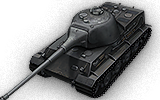
Firepower
DPM (HP/min) EU 1 668.80 RU 2 002.56
Rate of fire (rounds/min) EU 5.21 RU 6.26
Reload time (s) EU 11.51 RU 9.59
Armor & health
Hull armor · front (mm) EU 150 RU 180
Löwe FL · Tier VIII

Firepower
DPM (HP/min) EU 1 668.80 RU 2 002.56
Rate of fire (rounds/min) EU 5.21 RU 6.26
Reload time (s) EU 11.51 RU 9.59
Armor & health
Hull armor · front (mm) EU 150 RU 180
M48A2 Räumpanzer · Tier VIII
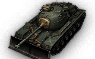
Penetration (mm)
EU  AP 212 /
AP 212 /  APCR 255 /
APCR 255 /  HE 45 → RU
HE 45 → RU  AP 205 /
AP 205 /  APCR 255 /
APCR 255 /  HE 45
HE 45
Damage (HP)
EU  AP 280 /
AP 280 /  APCR 280 /
APCR 280 /  HE 380 → RU
HE 380 → RU  AP 240 /
AP 240 /  APCR 240 /
APCR 240 /  HE 320
HE 320
Firepower
DPM (HP/min) EU 2 503.20 RU 2 145.60
Potential damage EU 17 920 RU 15 360
Mobility
Forward speed on medium terrain (km/h) EU 40 RU 35.34
Forward speed on soft terrain (km/h) EU 21.14 RU 18.32
Engine power (hp) EU 750 RU 650
Power/weight (hp/t) EU 15 RU 13
Mittlerer Kpz. Pr. 68 (P) · Tier VIII
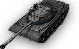
Mobility
Forward speed (km/h) EU 50 RU 55
Forward speed on hard terrain (km/h) EU 50 RU 55
Forward speed on medium terrain (km/h) EU 50 RU 55
Forward speed on soft terrain (km/h) EU 29.33 RU 33.85
Reverse speed (km/h) EU 18 RU 20
Engine power (hp) EU 780 RU 900
Power/weight (hp/t) EU 16.96 RU 19.57
Alternate mode
EU stats · RU statsMobility
Forward speed (km/h) EU 50 RU 55
Forward speed on hard terrain (km/h) EU 50 RU 55
Forward speed on medium terrain (km/h) EU 50 RU 55
Forward speed on soft terrain (km/h) EU 29.33 RU 33.85
Reverse speed (km/h) EU 18 RU 20
Engine power (hp) EU 780 RU 900
Power/weight (hp/t) EU 16.96 RU 19.57
Panther II · Tier VIII
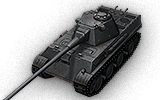
Mobility
Forward speed on medium terrain (km/h) EU 55 RU 51.48
Forward speed on soft terrain (km/h) EU 26.89 RU 24.52
Engine power (hp) EU 800 RU 740.10
Weight (kg) EU 53 922 → RU 54 710
Power/weight (hp/t) EU 14.84 RU 13.53
Tank traverse (°/s) EU 41.72 RU 37.55
Tank traverse on hard terrain (°/s) EU 41.17 RU 36.80
Tank traverse on medium terrain (°/s) EU 32.93 RU 29.44
Tank traverse on soft terrain (°/s) EU 15.68 RU 14.02
Armor & health
Hull armor · front (mm) EU 120 RU 150
Hull armor · side (mm) EU 80 RU 70
Turret armor · front (mm) EU 180 RU 190
Turret armor · side (mm) EU 80 RU 100
Turret armor · rear (mm) EU 80 RU 100
Health EU 1 650 RU 1 500
Miscellaneous
Stationary camo · after firing EU 2.22 RU 1.76
Moving camo · after firing EU 1.66 RU 1.31
Panther mit 8,8 cm L/71 · Tier VIII
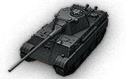
Penetration (mm)
EU  AP 230 /
AP 230 /  APCR 265 /
APCR 265 /  HE 44 → RU
HE 44 → RU  AP 223 /
AP 223 /  APCR 261 /
APCR 261 /  HE 44
HE 44
Firepower
DPM (HP/min) EU 2 615.28 RU 2 539.48
Rate of fire (rounds/min) EU 9.34 RU 9.07
Reload time (s) EU 6.42 RU 6.62
Gun handling
Dispersion · moving EU 0.16 RU 0.14
Dispersion · tank traverse EU 0.16 RU 0.14
Dispersion · turret traverse EU 0.10 RU 0.12
Dispersion · firing EU 3 RU 4
Mobility
Forward speed on soft terrain (km/h) EU 46.38 RU 38.20
Engine power (hp) EU 850 RU 700
Power/weight (hp/t) EU 18.28 RU 15.05
Armor & health
Health EU 1 600 RU 1 500
Panzer 58 · Tier VIII

Damage (HP)
EU  AP 300 /
AP 300 /  APCR 300 /
APCR 300 /  HE 360 → RU
HE 360 → RU  AP 280 /
AP 280 /  APCR 280 /
APCR 280 /  HE 370
HE 370
Firepower
DPM (HP/min) EU 2 346.75 RU 2 467.94
Rate of fire (rounds/min) EU 7.82 RU 8.81
Reload time (s) EU 7.67 RU 6.81
Potential damage EU 14 400 RU 13 440
Mobility
Forward speed (km/h) EU 55 RU 50
Forward speed on hard terrain (km/h) EU 55 RU 50
Forward speed on medium terrain (km/h) EU 55 RU 50
Forward speed on soft terrain (km/h) EU 54.22 RU 50
Engine power (hp) EU 700 RU 660
Power/weight (hp/t) EU 19.94 RU 18.80
Panzer 58 FL · Tier VIII
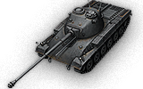
Damage (HP)
EU  AP 300 /
AP 300 /  APCR 300 /
APCR 300 /  HE 360 → RU
HE 360 → RU  AP 280 /
AP 280 /  APCR 280 /
APCR 280 /  HE 370
HE 370
Firepower
DPM (HP/min) EU 2 346.75 RU 2 467.94
Rate of fire (rounds/min) EU 7.82 RU 8.81
Reload time (s) EU 7.67 RU 6.81
Potential damage EU 14 400 RU 13 440
Mobility
Forward speed (km/h) EU 55 RU 50
Forward speed on hard terrain (km/h) EU 55 RU 50
Forward speed on medium terrain (km/h) EU 55 RU 50
Forward speed on soft terrain (km/h) EU 54.22 RU 50
Engine power (hp) EU 700 RU 660
Power/weight (hp/t) EU 19.94 RU 18.80
Panzer 58 Mutz · Tier VIII
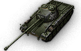
Damage (HP)
EU  AP 300 /
AP 300 /  APCR 300 /
APCR 300 /  HE 360 → RU
HE 360 → RU  AP 280 /
AP 280 /  APCR 280 /
APCR 280 /  HE 370
HE 370
Firepower
DPM (HP/min) EU 2 346.75 RU 2 467.94
Rate of fire (rounds/min) EU 7.82 RU 8.81
Reload time (s) EU 7.67 RU 6.81
Potential damage EU 14 400 RU 13 440
Mobility
Forward speed (km/h) EU 55 RU 50
Forward speed on hard terrain (km/h) EU 55 RU 50
Forward speed on medium terrain (km/h) EU 55 RU 50
Forward speed on soft terrain (km/h) EU 54.22 RU 50
Engine power (hp) EU 700 RU 660
Power/weight (hp/t) EU 19.94 RU 18.80
Rhm.-Borsig Waffenträger · Tier VIII
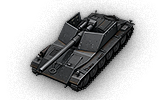
Mobility
Forward speed on soft terrain (km/h) EU 22.45 RU 21.37
Engine power (hp) EU 230 RU 218.86
Power/weight (hp/t) EU 12.39 RU 11.79
Tank traverse (°/s) EU 46.93 RU 39.63
Tank traverse on hard terrain (°/s) EU 54.54 RU 48.10
Tank traverse on medium terrain (°/s) EU 44.63 RU 39.36
Tank traverse on soft terrain (°/s) EU 23.38 RU 20.62
Armor & health
Health EU 1 150 RU 1 100
Health · engine EU 275 RU 80
Schwarzpanzer 58 · Tier VIII
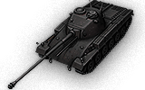
Damage (HP)
EU  AP 300 /
AP 300 /  APCR 300 /
APCR 300 /  HE 360 → RU
HE 360 → RU  AP 280 /
AP 280 /  APCR 280 /
APCR 280 /  HE 370
HE 370
Firepower
DPM (HP/min) EU 2 346.75 RU 2 467.94
Rate of fire (rounds/min) EU 7.82 RU 8.81
Reload time (s) EU 7.67 RU 6.81
Potential damage EU 14 400 RU 13 440
Mobility
Forward speed (km/h) EU 55 RU 50
Forward speed on hard terrain (km/h) EU 55 RU 50
Forward speed on medium terrain (km/h) EU 55 RU 50
Forward speed on soft terrain (km/h) EU 54.22 RU 50
Engine power (hp) EU 700 RU 660
Power/weight (hp/t) EU 19.94 RU 18.80
Tiger II · Tier VIII
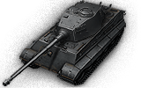

Gun handling
Aim time (s) EU 2.21 RU 2.40
Dispersion · turret traverse EU 0.10 RU 0.12
Mobility
Forward speed on medium terrain (km/h) EU 38 RU 33.09
Forward speed on soft terrain (km/h) EU 20.99 RU 17.26
Engine power (hp) EU 900 RU 740.10
Power/weight (hp/t) EU 12.69 RU 10.43
Tank traverse (°/s) EU 33.38 RU 29.20
Tank traverse on hard terrain (°/s) EU 33.43 RU 28.66
Tank traverse on medium terrain (°/s) EU 27.86 RU 23.88
Tank traverse on soft terrain (°/s) EU 14.54 RU 12.46
Armor & health
Hull armor · side (mm) EU 80 RU 100
Turret armor · side (mm) EU 120 RU 140
Health EU 1 800 RU 1 700
Tiger II FL · Tier VIII
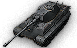
Gun handling
Aim time (s) EU 2.21 RU 2.40
Dispersion · turret traverse EU 0.10 RU 0.12
Mobility
Forward speed on medium terrain (km/h) EU 38 RU 33.09
Forward speed on soft terrain (km/h) EU 20.99 RU 17.26
Engine power (hp) EU 900 RU 740.10
Power/weight (hp/t) EU 12.69 RU 10.43
Tank traverse (°/s) EU 33.38 RU 29.20
Tank traverse on hard terrain (°/s) EU 31.71 RU 27.74
Tank traverse on medium terrain (°/s) EU 26.42 RU 23.12
Tank traverse on soft terrain (°/s) EU 13.79 RU 12.06
Armor & health
Health EU 1 800 RU 1 600
VK 100.01 (P) · Tier VIII
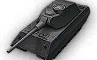
Firepower
Module damage EU 180 RU 165
Mobility
Tank traverse on hard terrain (°/s) EU 16.13 RU 17.72
Tank traverse on medium terrain (°/s) EU 14.33 RU 15.75
Tank traverse on soft terrain (°/s) EU 6.45 RU 7.09
Armor & health
Health EU 1 800 RU 1 700
VK 168.01 (P) · Tier VIII
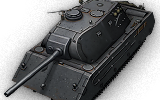
Armor & health
Track armor EU 40 RU 20
VK 168.01 Mauerbrecher · Tier VIII
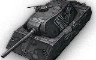
Armor & health
Track armor EU 40 RU 20
VK 45.02 (P) Ausf. A · Tier VIII
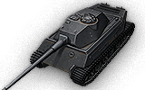
Penetration (mm)
EU  AP 212 /
AP 212 /  APCR 260 /
APCR 260 /  HE 60 → RU
HE 60 → RU  AP 200 /
AP 200 /  APCR 244 /
APCR 244 /  HE 60
HE 60
Firepower
DPM (HP/min) EU 2 301.79 RU 1 982.73
Rate of fire (rounds/min) EU 7.19 RU 6.20
Reload time (s) EU 8.34 RU 9.68
Gun handling
Aim time (s) EU 1.92 RU 2.21
Dispersion (m/100 m) EU 0.34 RU 0.35
Dispersion · damaged EU 0.67 RU 0.71
Dispersion · moving EU 0.18 RU 0.20
Dispersion · tank traverse EU 0.18 RU 0.20
Mobility
Forward speed (km/h) EU 38 RU 32
Forward speed on hard terrain (km/h) EU 38 RU 32
Forward speed on medium terrain (km/h) EU 38 RU 32
Forward speed on soft terrain (km/h) EU 26.71 RU 20.13
Reverse speed (km/h) EU 16 RU 15
Engine power (hp) EU 920 RU 888.12
Weight (kg) EU 57 000 → RU 73 000
Power/weight (hp/t) EU 16.14 RU 12.17
Turret traverse (°/s) EU 26.08 RU 22.95
Tank traverse (°/s) EU 44.85 RU 22.95
Tank traverse on hard terrain (°/s) EU 42.81 RU 29
Tank traverse on medium terrain (°/s) EU 36.23 RU 24.54
Tank traverse on soft terrain (°/s) EU 20.48 RU 13.87
Armor & health
Hull armor · front (mm) EU 150 RU 170
Hull armor · side (mm) EU 80 RU 120
Turret armor · rear (mm) EU 120 RU 80
Health EU 1 750 RU 1 650
Miscellaneous
Fire chance (%) EU 20 RU 15
VK 75.01 (K) · Tier VIII
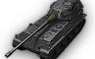
Firepower
DPM (HP/min) EU 1 722.71 RU 1 916.51
Rate of fire (rounds/min) EU 3.52 RU 3.91
Reload time (s) EU 17.07 RU 15.34
Gun handling
Dispersion · moving EU 0.28 RU 0.22
Dispersion · tank traverse EU 0.28 RU 0.22
Dispersion · turret traverse EU 0.17 RU 0.14
Depression (°) EU 5 RU 7